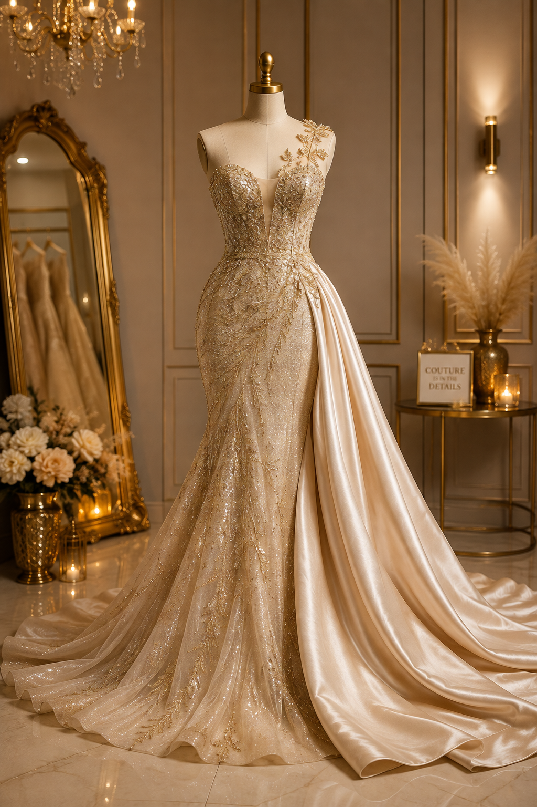
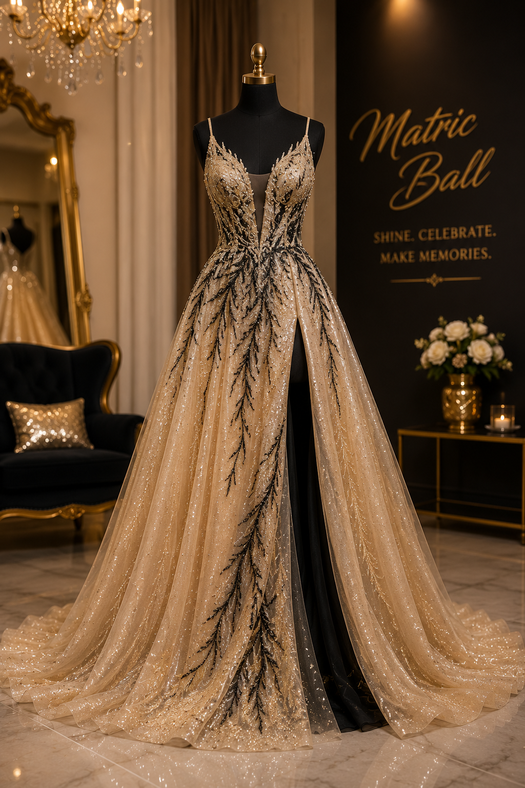
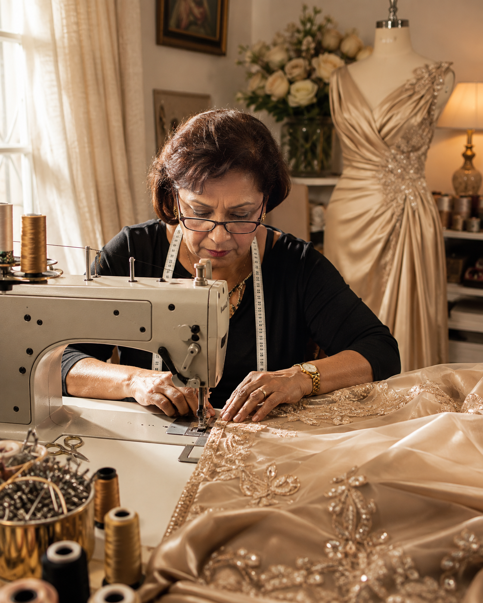
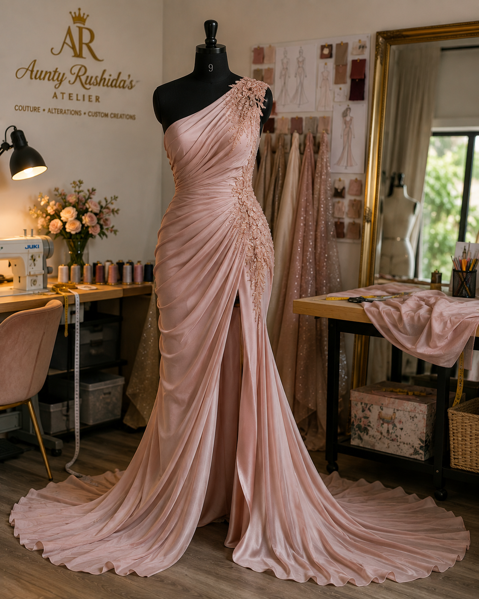

Statement gowns and elegant occasionwear designed to make an entrance.
More than 30 years of dressmaking experience
Made for the moment
you'll remember.
Custom garments, occasionwear and careful alterations, made personally from a Cape Town home atelier.
30+years' experience
Madein Cape Town
Personalone-to-one service

WEDDINGS ✦ MATRIC BALLS ✦ CONCERTS ✦ FESTIVALS ✦ ALTERATIONS ✦ CUSTOM GARMENTS
The woman behind the seams
Meet Aunty Rushida
For more than three decades, Aunty Rushida has been making, reshaping and repairing clothing with the kind of skill that comes only from years behind the machine and a careful eye for fit.
From matric-ball glamour and wedding garments to concert and festival looks, each project is handled personally from her home atelier in Bonteheuwel, Cape Town.
30+years of craft
Made around you
What the atelier offers
From a completely new garment to the final alteration that makes something you already own sit beautifully.
Custom garments and careful alterations for brides, bridal parties and wedding guests.
Stage-ready clothing that stands out while still allowing you to move confidently.
Hems, fit adjustments, repairs and refinements that help favourite garments fit better and last longer.
One-off pieces developed around your occasion, fabric, silhouette and personal style.
Send your idea and discuss what is practical, how it can be made and what the next step should be.
Occasionwear inspiration
Made for memorable moments
These images demonstrate the types of garments and occasions the atelier can serve. Replace them over time with photographs of Aunty Rushida's own completed work.




Experience you can see in the finish
Serious equipment. Personal attention.
Aunty Rushida works with industrial machinery and decades of hands-on dressmaking experience. The atelier may be quaint and home-based, but the work is serious.
01
Personal consultation
Discuss the event, look, fit and practical details.
02
Measured & made
Garments and alterations are handled around the individual.
03
Fittings & finishing
Refinements continue until the garment sits and feels right.
A special piece in her story
From the home atelier to a national stage.
Among Aunty Rushida's past work is a dress made for a performer who sang the South African national anthem at a Springboks rugby match. The performer's name and match details will be added once confirmed.
No name or match detail is published until confirmed.

Simple & personal
How to get started
Send your idea
Share what you need, your event date and any inspiration pictures.
Discuss the details
Arrange a consultation or fitting and talk through fabric, fit and finish.
Receive a quotation
Pricing is quoted according to the specific garment, work and materials involved.
Create & fit
The garment is made or adjusted, with fittings where needed.
Your next garment starts with a conversation
Tell Aunty Rushida what you have in mind.
Custom work is quoted individually. Send the occasion, date and a picture or description of what you would like.
LocationBonteheuwel, Cape Town
Home atelier · Visits by appointment
PricingCustom quotation
Based on the garment and work required
Phone / WhatsApp071 450 8227